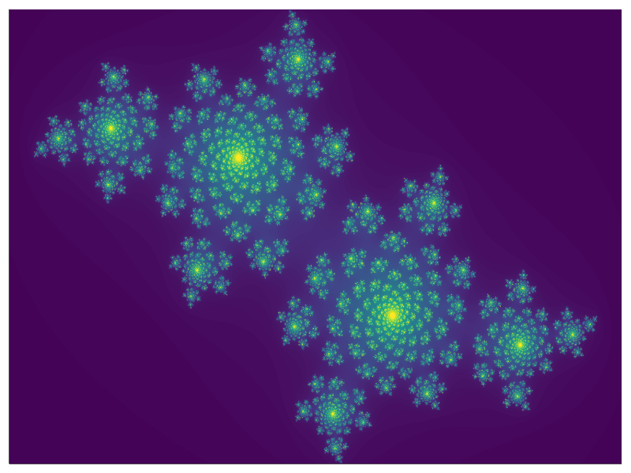
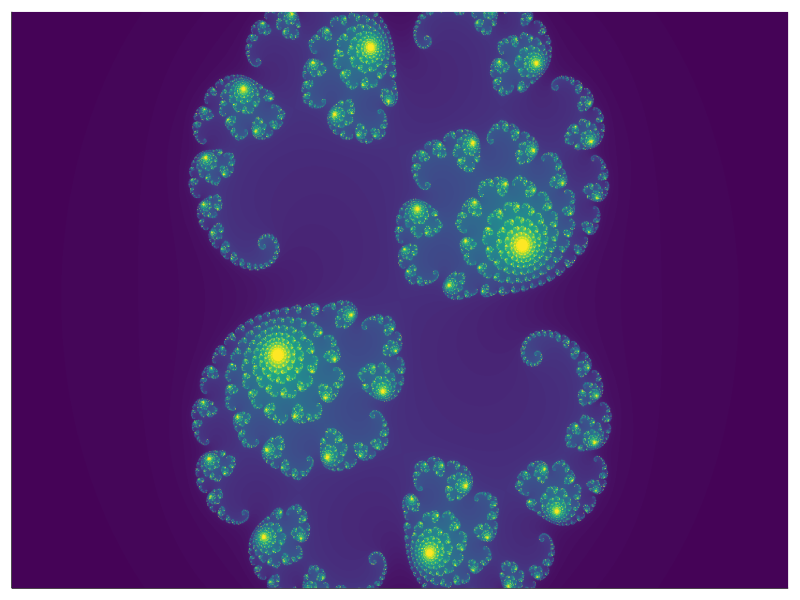
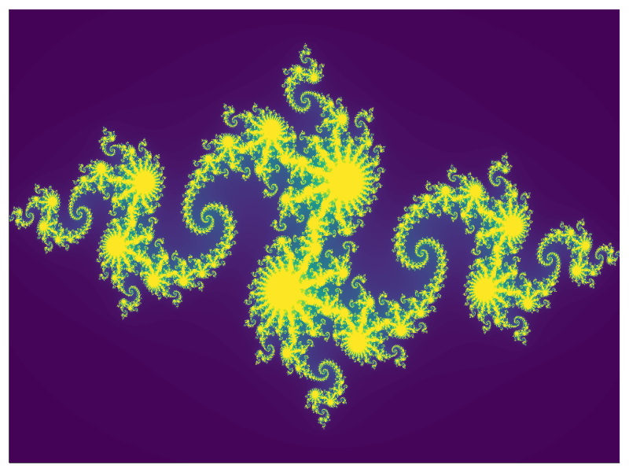
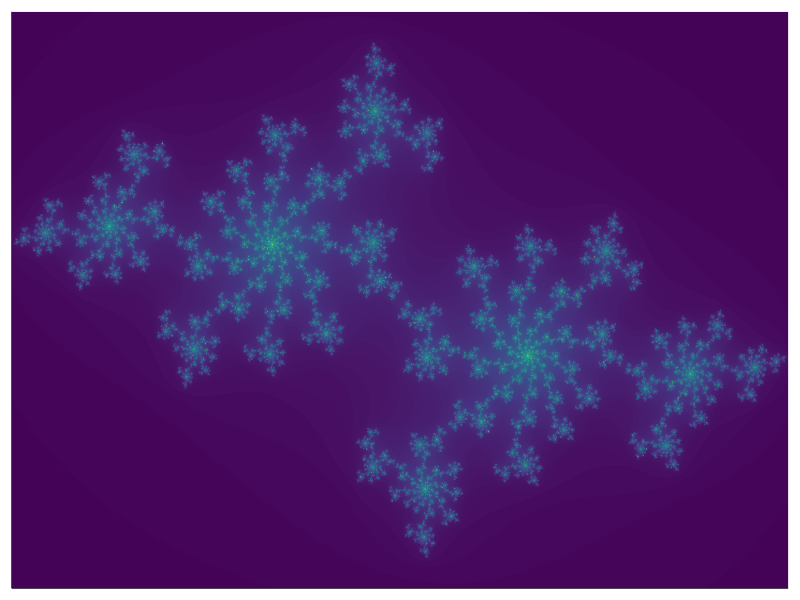

Julia set
So far, we used only the standard library shipped with Julia. However, the standard library provides only basic functionality. If we want to get additional functions, we have to use extra packages. There is a Plots package for creating plots. Packages can be installed via Pkg REPL. To enter the Pkg REPL from the Julia REPL, press ] and install the package by
(@v1.6) pkg> add PlotsWe need to use the using keyword to load the package. For example, we can use the Plots package to visualize the sin and cos functions.
using Plots
x = 0:0.01π:2π
plot(x, sin.(x); label = "sinus", linewidth = 2)
plot!(x, cos.(x); label = "cosinus", linewidth = 2)"/home/runner/work/Julia-for-Optimization-and-Learning/Julia-for-Optimization-and-Learning/docs/build/lecture_03/sin.svg"
There will be a whole section dedicated to the Plots package. However, we need some basic functionality to visualize the outputs of the following exercises.
Every programmer should be able to rewrite pseudocode to actual code. The goal of this exercise is to rewrite the following pseudocode:

This pseudocode describes how to compute the Julia set for the following function
\[f_c(z) = z^2 + c,\]
where $c \in \mathbb{C}$ is a complex parameter. To test the resulting code, try the following settings of input parameters
- $x$ is a vector of 1500 evenly spaced numbers from
-1.5to1.5. - $y$ is a vector of 1000 evenly spaced numbers from
-1to1. - $c = - 0.4 + 0.61 \cdot i$
- $R = 2$
- $N = 1000$
Use this code given below to plot the heatmap of the matrix $A$.
using Plots
heatmap(A;
c=:viridis,
clims=(0, 0.15),
cbar=:none,
axis=:none,
ticks=:none
)Solution:
Firstly, we have to define all input parameters.
c = - 0.4 + 0.61im
R = 2
N = 1000
L = 1500
K = 1000The second step is to define the vectors x and y. Since we know that these vectors contain evenly spaced numbers, and we also know the starting point, the stopping point, and the length of the vectors, we can use the range function.
x = range(-1.5, 1.5; length = L)
y = range(-1.0, 1.0; length = K)The next step is to define the A matrix of zeros by the zeros function.
A = zeros(K, L)Now, we rewrite the for loops from the pseudocode. It is possible to rewrite the pseudocode in an almost identical way. However, in many cases, the code can be simplified. For example, we can use the shorter syntax for writing nested for loops.
for k in 1:K, l in 1:L
z = x[l] + y[k]*im
for n in 0:N
if abs(z) > R^2 - R
A[k, l] = n/N
break
end
z = z^2 + c
end
endFinally, we visualize the heatmap of the matrix A.
using Plots
heatmap(A;
c = :viridis,
clims = (0, 0.15),
cbar = :none,
axis = :none,
ticks = :none,
)
In the previous exercise, we rewrote pseudocode to an actual Julia code. This exercise will improve the central part of the code: the inner loop. Write a function which replaces the inner loop in the code from the exercise above. Use the following function definition
function juliaset(z, c, R, N)
???
return ???
endwhere $z, c \in \mathbb{C}$, $R \in \mathbb{R}$ and $N \in \mathbb{N}$. Use the while loop to replace the for loop in the original pseudocode. Visualize the resulting matrix by the same code as in the previous exercise.
Hint: recall that the function should return 0 if n > N and n/N otherwise.
Solution:
As suggested in the exercise description, we will use the while loop. Using the while loop, we have to define a stopping condition. In this case, we have two conditions:
- maximal number of iterations is
N + 1, - the absolute value of
zneeds to be smaller or equal toR^2 - R.
These two conditions can be merged into n <= N && abs(z) <= R^2 - R. Inside the while loop, we only have to update n and z.
function juliaset(z, c, R, N)
n = 0
while n <= N && abs(z) <= R^2 - R
n += 1
z = z^2 + c
end
return n > N ? 0 : n/N
endWe use the ternary operator to decide which value is returned. Now we need to define all input parameters as in the previous exercise.
c = - 0.4 + 0.61im
R = 2
N = 1000
x = range(-1.5, 1.5; length = 1500)
y = range(-1.0, 1.0; length = 1000)We can use a nested for loops to create A. However, a simpler way is to use the list comprehension or broadcasting to vectorize the juliaset function.
A1 = [juliaset(xl + yk*im, c, R, N) for yk in y, xl in x]
A2 = juliaset.(x' .+ y .* im, c, R, N)Both A1 and A2 are the same. In the second case, we have to pay attention to use the correct form of the input. We use the transposition of x. Finally, we can call the same code to create the same plot.
using Plots
heatmap(A1;
c = :viridis,
clims = (0, 0.15),
cbar = :none,
axis = :none,
ticks = :none,
size = (800, 600),
)
Try different values of variable c to create different plots. For inspiration, check the Wikipedia page about Julia set.
- $c = 0.285 + 0.01 \cdot i$

- $c = - 0.835 - 0.2321 \cdot i$

- $c = -0.8 + 0.156 \cdot i$

- $c = -0.70176 + 0.3842 \cdot i$

Animation
It takes a lot of time to create the animation below, especially when using the default GR backend for the Plots package. The plotting time can be reduced by using a different backend such as the PyPlot backend.
using Plots, PyPlot
pyplot()The PyPlot package must be installed first. An alternative way is to use the Makie package instead of the Plots package.
We will now create an animation of the Julia sets for c defined as follows
\[c_k = 0.7885 \exp \{ k \cdot i \}, \qquad k \in \left [\frac{\pi}{2}, \frac{3\pi}{2} \right ].\]
Firstly, we create the vector of all values c by combining the range function and broadcasting.
cs = 0.7885 .* exp.(range(π/2, 3π/2; length = 500) .* im)Note that we use the length keyword to specify the length of cs. To create an animation, it suffices to use the for loop in combination with the @animate macro.
anim = @animate for c in cs
A = juliaset.(x' .+ y .* im, c, R, N)
heatmap(A;
c = :viridis,
clims = (0, 0.15),
cbar = :none,
axis = :none,
ticks = :none,
size = (800, 600),
)
end
gif(anim, "juliaset.gif", fps = 20) # save animation as a gifThe code inside the loop is the same as in the previous exercise.